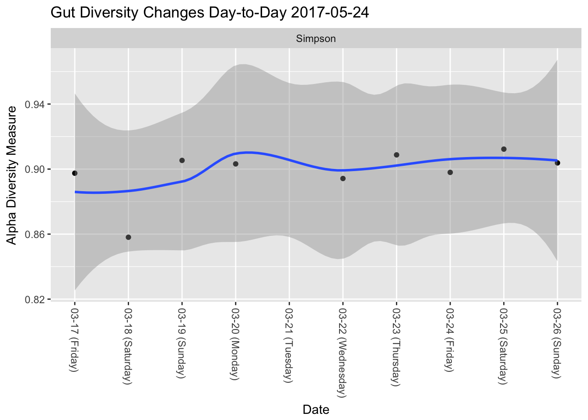
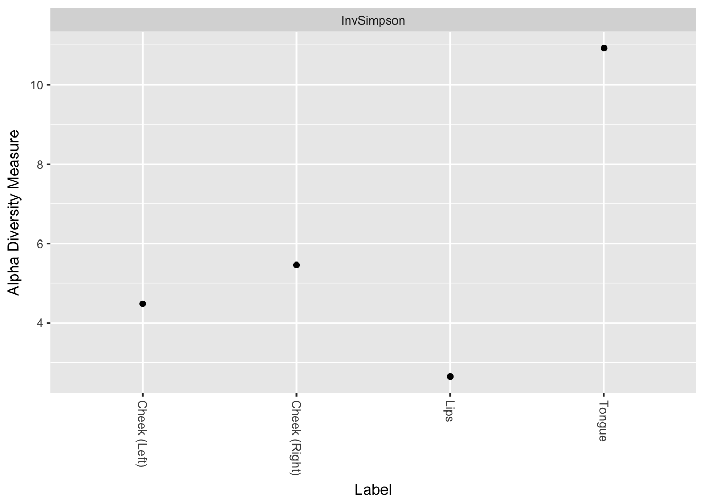
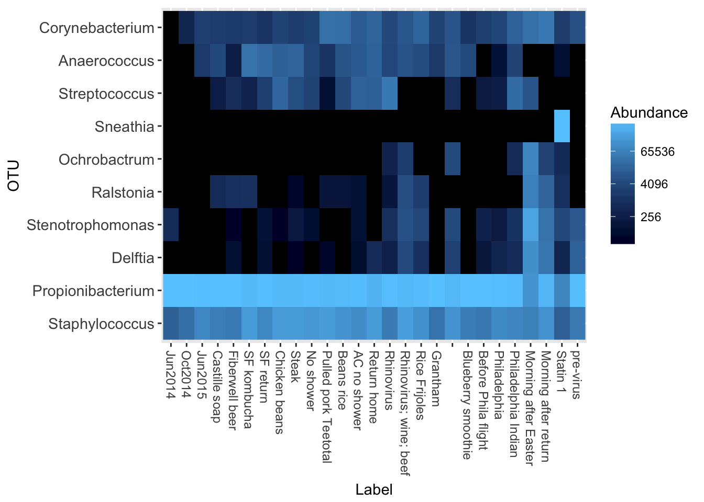
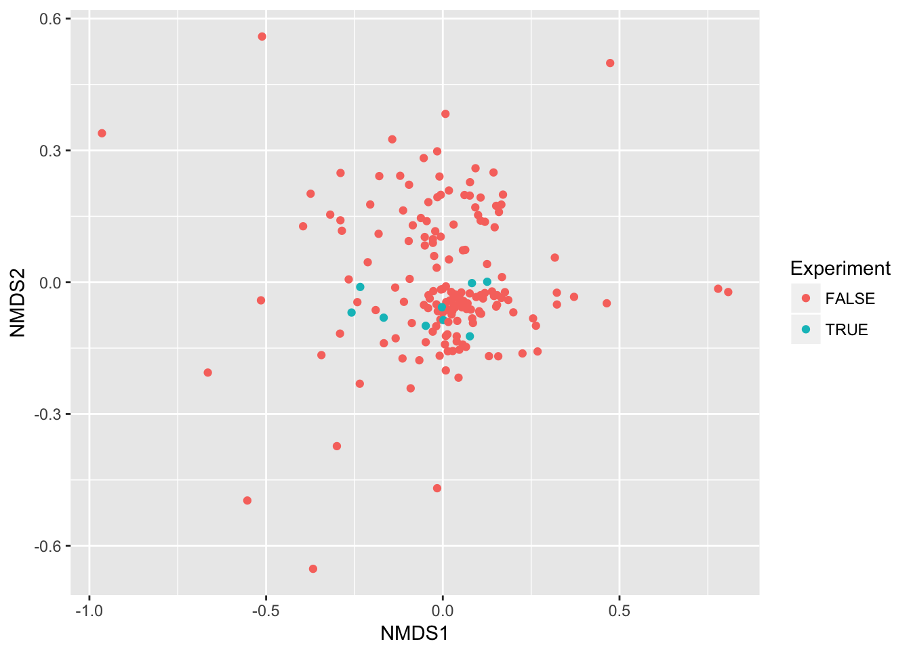
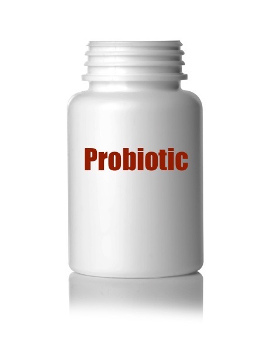
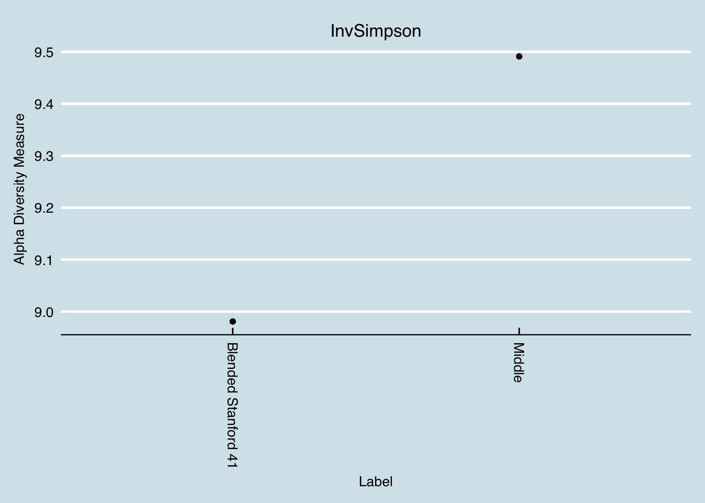

Chapter 1 Learn the Science
Living microbes are found everywhere on earth, often in surprising places. Let’s look at some examples to get an idea of how ubiquitous and hardy they can be, and then we’ll back up with a short intro to the science of biology. Finally, we’ll discuss how scientists study the human microbiome.
1.1 Overview
1.1.1 The promise and disappointment of genetic testing
If you want to optimize your health, you’ll eventually need to understand more about your genes. Wearable devices like FitBit or Apple Watch, or a nutrition or dieting app like MyFitnessPal, can help optimize some aspects of your physical body but hard work and discipline will take you only so far. As you reach the limits of how much you can change, you’ll settle into the discovery that the genetic component is undeniable. Over 1 million customers of the genetic testing company 23andme have opted to look at their genes in part to understand better what their own limits are.
Genes do seem important. Everything from twin studies to laboratory experiments with knock-out mice shows that large parts — perhaps the major part — of our health and even behaviors are determined as much by our genetic makeup as by the environment in which we put ourselves. Still, despite much progress since the unveiling of the Human Genome Project in 2001, there are frustratingly few examples of genes that decisively determine one trait or another. Except for a few simple cases like eye or hair color, most genes seem merely to increase or decrease the odds one way or another. When you read the details about your own genes, you’ll be disappointed at how little about genetic testing is truly insightful. Did you really need a DNA test to tell you that you are lactose intolerant?
Worse, even when the science tells you something you didn’t know — your likelihood of Alzheimers or Grave’s disease — there often isn’t much you can do about it besides eat healthy and get plenty of exercise. In fact, with disappointingly few exceptions, nearly all conclusions you’ll get with DNA results will be advice you should be doing anyway.
What’s an optimizer to do? On the one hand, the evidence is powerful that genes determine much or most of your health, but on the other hand, you can’t do much about it beyond the obvious. The results of human DNA testing just aren’t all that actionable.
Fortunately, one of the most exciting consequences of the latest science on human genetics is the role played by other genes in your body. And the best news: you can change them! And you don’t need a fancy laboratory with complicated equipment for recombinant DNA. This book will show you how, through experiments on the types of food you eat and deliberate changes you can make in your environment, you can make a significant difference in kinds and functions of the genes inside you.
1.1.2 Most of your DNA is not fixed
If you could zap me with a scanner that can break down everything in my body, all the physical “hardware” inside me right now, you’d find a curious fact: although it’s true that 99% of the weight and size of what you see is human (blood, skin, bones, organs, etc.), only about half of the cells are human, and even less than that — perhaps as little as 1% — of the DNA-carrying genes are human.
What’s the rest? Who am I, if only 1% of the genes inside me are human? The answer is microbes, and as befits something that so outnumbers the “human” part of us, they play a large role in everything about what we do, from our health to our moods and even to our motivations. These microbes and the important DNA they carry are constantly changing, sometimes quite significantly, depending on what you eat, who you’re with, and a host of other factors that you can manipulate.
1.1.3 Microbes are older than any of us
We tend to think of the invisible, single-celled microbes as “primitive”, not nearly as “advanced” as we humans, with our marvelous brains and ability to transform the earth with airplanes and skyscrapers and nuclear reactors and all the rest. But that’s what we would think, wouldn’t we? In fact, the microbes are everywhere, literally everywhere on earth, in the sky, even deep underground. We can’t go anywhere without encountering microbes because, well, there are even microbes on and inside us. Humans can’t survive without microbes. So what does it even mean to say we’re “better” or more “advanced” than they are?
Before the microscope, people didn’t even know that microbes existed. Similarly, until the advent of large-scale gene sequencing machines in the past ten years, almost nothing was known about the amazing ubiquity and resilience of microbes. Yes, they’re single-celled and yes many of their cellular functions seem more straightforward than the functions of a multi-cellular creature like us, but it would be a mistake to assume that means microbes – collectively – are less influential, and certainly it would be a big error to assume they are less important. Fact is, these organisms have been around, breathing, eating, multiplying, for billions of years, often in pretty much the same form that they are today. These things have survived every imaginable planetary condition from volcanoes to the depths of the ocean to the inside of nuclear reactors. Global Warming means nothing to these guys, who have seen and thrived all over the earth since the day life first appeared.
1.1.4 What they want
Because they have such a huge advantage over us, in lifespan (each microbe is an exact divided copy of itself, going back a zillion generations), in speed of replication (they can double in just a few minutes under the right conditions), and ubiquity (as I said, cellwise they far outnumber us), they can afford to colonize every new imaginable environment.
And that’s what they do, every time a new frontier opens to them. The moment of your birth, for example, when you left the (mostly) sterile conditions of your mother’s womb, they immediately flooded all over your skin, mostly coming from your mother, and in that fresh environment they used their first-mover advantage to get a stronghold that in many cases lasts your entire life. Many (most?) of the microbes that matter arrived inside you this way, originally, and many of them are still there today, decades, even half a century or more later.
To survive, they need one thing: something to eat. Being so tiny, they don’t need much, and they mostly eat things that you (and other larger creatures) weren’t interested in anyway. (Or, since they were here first, it’s probably more accurate to say that you and I must live on the foods that they don’t want. A cheeseburger is only food for you because you snatch it faster than they do. Leave it outside for a while and they’ll get it eventually).
1.1.5 Who’s in charge?
Collectively, the multitude species of microbes will eat just about everything, but individually each species has its preferences. When they’re outside the body, as I said, they can “colonize” new territories (like fresh baby skin) to get what they want, but those inside your tummy are at the mercy of whatever it is you decide to put into your mouth.
Often, that’s not a big deal: many species thrive on the same proteins, carbohydrates, and fats that you do. But some species do better than others with certain types of foods, and this is where the line between your human desires and theirs becomes unclear.
Eighty percent of all your brain’s outside receptors – counting all the nerve endings everywhere on your skin – eighty percent complete their connections in the gut. The main switching grounds, an area called the vagus nerve, does something. What? We know very little, but we see some evidence that the purpose – the reason that not 1% or 10% or 50% but a full 80% of all the receptors go to the gut – is so the microbes can tell your brain what to do.
When you find yourself feeling hungry, ask yourself who is feeling hungry. Scientists have traced that feeling of hunger to changes in certain hormones like leptin, but wait – why did the leptin levels change in the first place? Could it be that a microbes someplace was manipulating your leptin levels, perhaps by poking that vagus nerve just the right way – to get your brain to start thinking about whatever food that microbe wants?
This isn’t as ridiculous as it sounds, the idea that microbes could influence your feelings and desires. Think about a disease like the rabies microbe. Because it spreads through saliva, it can’t find new territory unless its host somehow finds itself exchanging saliva – biting – another potential host. So guess what a rabies victim can’t stop thinking about? Biting a new victim. The microbe literally puts a thought into the mind.
There are many other examples, so many in fact as to be potentially a bit disturbing when we realize that we humans may be much more at the mercy of tiny microbes than we think. Links have been made between microbes and schizophrenia, stress, anxiety, self-grooming, and much more. Autism Spectral Disorders, which have always seemed puzzling because of the relationship they seem to have with digestive problems, are also linked to microbes, or the lack thereof.
Perhaps the most intriguing example is the common parasite Toxoplasma gondii, the strange organism that can only reproduce in the intestines of cats. A parasite seen often in all warm-blooded mammals, it’s found in about a third of the global population of humans too. It’s one of the reasons they tell pregnant women to stay away from cat litter. But here’s the interesting part: when a Toxo protozoa infects a mouse, it leaves cysts in the mouse brain that make it attracted to cat urine! Yes, it changes the neurology of a mouse so that it’s more likely to end up inside a cat’s tummy – exactly where it can reproduce.
Think about this too much, and you’ll end up with the obvious question: what other weird microbes are infecting us right now? Can we explain some of our own behaviors this way? Is there a human equivalent of these infections, driving us to do things we “ordinarily” wouldn’t do? And maybe these microbes are so ubiquitous, teeming all over us and in our brains, maybe there’s no way to even know what “ordinary” or “normal” human behavior is.
1.1.6 What is health?
Modern, western medicine tends to think reductively about health, dividing the body into pieces like organs and cells and prescribing interventions that target one particular aspect of the whole, with specific drugs or supplements. But of course nothing as complex as the body and health can be simplified this much. Maybe you can’t really think about human hardware without thinking about the whole ecology that goes with it, the various organisms live in and around us and greatly outnumber us.
When you think this way, then suddenly “health” takes on a whole new meaning, because we’re no longer talking about the status of a single organism – me – but rather about the entire functioning ecosystem of many, many living things, including the “me” that I want to refer to as a human. You can’t survive long without these microbes any more than you can survive without air. This whole “me”, sometimes referred to as the “holobiont”, is perhaps the true unit of what it means to be human and healthy.
1.2 Microbes everywhere
Despite its importance, the microbiomial world is invisible. Like fish unaware of water, we are literally bathed in living, eating, reproducing lifeforms of suprising obstinance that have unexpected but important effects on the world we can see.
Life is tenacious, fighting for and keeping its niche in just about every environment it encounters. In the sky, deep underground, in the most barren habitats cold or hot anywhere on earth, there are lifeforms. The vast majority of these are microbes, so small we can’t see them, but small doesn’t mean irrelevant. In fact, the more that science understands about the invisible microbial world, the more it becomes clear that these uncountably numerous creatures exert a much bigger effect than we think.
Every traditional culture recognizes a role for the invisible, often translated with words like “spirit” or “life force”, sometimes with more expressive terms like “angels”, “demons”, “gods” or even, simply, “God”. It’s tempting to dismiss these invisible forces as so much superstition, as though truth is made only of things we can see, but of course that’s not quite true either. With the right instruments, we can see many invisible things; some of the greatest discoveries happen when a new gadget like a microscope or telescope makes people aware of a world that was previously hidden.
The invisible world of microbes is like that, with new, low-cost technologies showing us incredible, rich, living universes waiting to be explored.
The word “microbe” refers to any tiny organism that carries its own genetic information for purposes of propagating itself. Far too small to see with the naked eye, dozens could fit inside a typical human cell. Although it’s common to think of microbes and bacteria as the same thing, in fact there are at least seven different types of microorganism: bacteria, extremophile life forms called archaea that live and thrive in environments too challenging for bacteria, protozoa, algae, fungi, viruses, and some multi-cellular animal parasites such as helminths. Each of these has its own characteristic body type, means of reproduction, and ways of moving around.
Let’s look next at some of these environments and see the odd places where microbes have been found.
1.2.1 Microbes above and below
Even the sky contains living microbes. Scientists at the Institut de Chimie de Clermont-Ferrand in France have for decades sampled clouds to determine their precise contents, and sure enough: they finds plenty of life there, usually between 1,000 and 10,000 bacterial cells per milliliter — not all that different from the amount you’d find in alpine snow. Like every living organism, these cells must soak up water and other nutrients, converting them into energy and various by-products, which collectively have a massive effect on the overall atmosphere, more than enough to affect climate.2

source: ASMScience
The upper atmosphere is a harsh place for life: regular freezing and thawing, constant bombardment of UV radiation from the sun during the day, cold, subzero freezing temperatures at night, high speed, unpredictable winds that quickly disperse any colonies. Plus, at any moment these organisms can find themselves flushed to the ground in a rainstorm, where they’ll need to adapt again.
These extreme conditions are just another day in the life for one species commonly found in clouds, Pseudomonas syringae, which harbors a protein in its cellular wall that reacts to cold temperatures, alternately preventing and allowing a water molecule to turn into ice and back. It doesn’t take many of these reactions to generate precipitation. With so many cells constantly floating in the atmosphere, even small changes in concentration — perhaps due to human activity on the ground — can, at least theoretically, make the difference between rainfall and drought. How much of an effect is hard to say: you can imagine how difficult it is to study bacteria floating in the sky.
Our inability to access these environments is often the biggest reason we remain ignorant of the life that is found there, but there have been many attempts to learn more. Formal studies about the viability of microbes in space have been conducted since the early 1960s,3 when Apollo-era scientists wanted to understand the dangers of space travel, both to any humans in space as well as to those of us on the ground who might be exposed to any intersteller visitors. Although new and bizarre extremophiles are discovered regularly, so far it appears that even the hardiest of known organisms have a tough time when directly exposed to solar ultraviolet radiation. But the particularly resilient spore-making Bacillus subtilis, for example, it is estimated could survive for at least six years if it were shielded somehow from direct sunlight, say embedded inside a meteorite.4
Several lichen species, including rock colonizing Rhizocarpon geographicum and Xanthoria elegans, and the vagrant Aspicilia fruticulosa, remained alive after ten days of direct UV exposure on board a European Space Agency spacecraft.5 Some especially hardy cyanobacteria that came with the lichens didn’t survive, so perhaps space offers a better chance for multicellular life, which has the luxury of outer protective pigmented layers.
Traces of plankton, for example, have been found in space, on the surface of the International Space Station, where they are believed to have floated from the upper atmosphere.6 Why?! How did they get there! Who knows!
What is known is that between a quarter and two-thirds of microbes in the air are entirely new and undiscovered organisms. A study of the “air microbiome” above New York City found bacteria and viruses that apparently originated in water, soil, vegetation, as well as in animals and humans, but even then few patterns emerge. Although there appear to be distinct microbial environments, on the land versus water, for example, overall many of these organisms are quite hardy and seem to find themselves migrating all over the place.
Scientists studying a water-filled fracture two miles underground at the Mponeng gold mine near Johannesburg, South Africa, discovered Candidatus Desulforudis audaxviator by accident, after noticing odd levels of hydrogen compounds, by-products of the activity of an isolated bacterial colony.7 Interestingly, this organism is a member of the same Firmicutes phylum that dominates human guts, though this particular bacterium evolved quite separately from us: it hasn’t been exposed to surface water for millions of years. A systematic study of its genome revealed that, unlike other bacteria that usually live in co-dependent colonies, this one can survive all by itself, feeding on tiny bits of radioactive energy from uranium decay in an environment far removed from all other energy sources. It’s not a great life: these creatures reproduce rarely, only once every few hundred or thousand years. But at least they don’t have to worry about being consumed by predators down there.
Subglacial Lake Whillans is a lake buried under more than 800 meters of ice in the West Antarctic. A careful underground bore hole inserted by a team from Louisiana State University in 2014 found more than 4,000 different species of bacteria surviving under that ice. The total bacterial count was not that different from what you’d find in surface lakes on other parts of the planet, a fact that is especially surprising for an environment that hasn’t had a ray of light in millions of years. The bacteria instead thrive on iron, sulphur, and nitrogen as energy sources.8
Those may not be the deepest examples. A Cold War-era Soviet team drilling the world’s deepest hole, were forced to abandon the project in 1994 at 12,261 meters (or 7.5 miles) underground, when they hit temperatures above 180 °C (or 356 °F), too hot for their equipment. Apparently the conditions weren’t too hot for life, though: the nine-inch diameter Kola Superdeep Borehole9 found 24 species of fossilized plankton among the two-billion-year-old rocks down there. Of course, fossils are not the same thing as living microbes, but even dead remnants at that depth is evidence of the tenacity of life.
Still other microbes thrive in radioactive environments, like the dangerous interior of a nuclear reactor. Deinococcus radiodurans is an extremophile member of Phylum Deinococcus-Thermus that boasts an impressive built-in DNA repair mechanism that lets it survive cold, vacuum, acid, light, dehydration – you name it. It remains unbothered by radiation levels more than 1,000 times higher than would kill a human.
Microbes seem capable of living off just about anything. Ideonella sakaiensis, discovered in 2016 by a Japanese team10, can break down and metabolize plastic. Termites owe their ability to eat wood to a whole community of synergistic bacteria, archaea, and protists. Aphids can’t live off sap without Buchnera, a microbe that supplies them with essential amino acids.

1.2.2 Microbes around you
You don’t have to go to extreme conditions to find unusual microbes. Microbes thrive whereever humans live, and they are in our everyday environment too. The recent PathoMap study of DNA collected from the New York City subway found that, like the air above, half of the microbes we walk past everyday are unknown to science.11 Most of the organisms are apparently benign, with no obvious affect on humans one way or another. Even when known pathogens are found, including Yersinia pestis (Bubonic plague) and Bacillus anthracis (anthrax), the lack of reported infections indicates that probably these organisms are busying themselves for some other, unknown, and maybe even useful purpose12

Generally the microbes seem content to exist patiently with no apparent affect on the environment. A station flooded by Hurricane Sandy showed a similarity to a marine environment a year after the disaster.
Humans are the source of many unusual microbes in our environment. Regularly shedding 1.5 million skin cells per hour, leftover inhabitants of our bodies can colonize a hotel room in less than six hours.13
http://www.ncbi.nlm.nih.gov/pmc/articles/PMC3655107/ We found that infants living with pets had significant over-representation of Clostridiaceae, Veillonella (especially for dogs), Peptostreptococcaceae and Coprococcus. Bifidobacteria were under-represented among infants living with pets (especially for cats). For dogs only, there was also under-representation of Eggerthella
1.2.3 Microbes and food
We like our food pure and clean, and so do microbes. Well, some microbes. Freshly-washed produce is a just a colonization opportunity for many species, for whom the lack of competition is a shot at a fresh start.
Before washing, plants are covered in microbes, from the flowers and branches to the roots. Seeds planted in sterilized soil will germinate, but can’t grow regardless of the nutrients, water, or sunlight you give them. The relationship between soil bacteria and plants is a complicated and understudied one, but what is known is that every plant hosts its own unique species of microbe in a symbiotic relationship as tight as any on earth. The microbes tangled in the roots of a corn or wheat plant, for example, are highly specific to that particular strain. Swap out the microbes, or – worse – sterilize the soil, and the plant can’t take advantage of the nutrients sitting right at hand, because they are in a form that is useless until digested by microbes.
After harvest and processing, our meals still contain a surprising variety of microbes. Of course, sometimes this is deliberate: some of us eat fermented foods like sauerkraut or yogurt to ingest the microbes that were grown to make their special flavor or texture. But even everyday foods, like raw vegetables, will naturally be covered with healthy levels of microbes.
You will ingest somewhere between 1.4 million and 1.3 trillion microbes per day, depending on what type of diet you follow. Eat according to USDA guidelines and you’ll be at the high end of the range, emphasizing fruits and vegetables, lean meat, dairy, and whole grains; the lower end is more typical of a vegan diet, or even a typical American convenience food-style diet of “junk food”. Interestingly, you’ll get roughly the same diversity of microbes no matter which diet you follow, although there can be a difference depending on whether the food is raw or cooked.14
We eat plants for their nutrients, but what exactly counts as a “nutrient” is often in the eye of the beholder. Plants don’t like to be eaten any more than the rest of us, and they have developed powerful defense mechanisms to keep out predators, including microbes. In fact, it’s those anti-microbial properties that make many plants medicinally useful. One estimate showed that of 18,000 plants available to Native Americans, only 1,625 were used as food; but 2,564 were used as drugs, many of which are specifically there to manipulate microbes.15 Extrapolate that to the estimated 500,000 different plants on earth, only about 1-10% of which are useful as foods to humans, and it becomes clear that microbes play a big role in which plants thrive and which don’t.
You’re not necessarily immune from accidental antibiotic ingestion if you simply avoid eating antibiotic-treated meat. Between 70% - 90% of the antibiotics given to farm animals are ultimately discharged in their manure, which if administered as fertilizer, can coat the soil used for growing food plants. Although antibiotics naturally degrade over time, the process can take months and under many conditions, giving ample time to be taken up in to plants that we eat, so even hard-core vegans may be getting more antibiotics than they like.16
Meanwhile, junk food doesn’t necessarily wreck your microbiome as much as you’d think. Careful experiments show surprisingly few differences between mice fed a high fructose, high fat diet – unless there was something else messed up to begin with17
And what about microbes in the kitchen? When food is contaminated by bacteria, in the vast majority of cases, the source is fecal. In other words, it’s relatively rare for raw food to be contaminated by something from within – the danger is almost always from pathogens that are brought in during food preparation.18
1.2.4 Anti-microbials in food
Even plants that depend on pollinators, or those that spread their seeds by being ingested by birds, don’t necessarily like to be eaten whole and completely. Leafy grasses attract ruminants like cows or sheep with large tasty fibrous leaves that the plant offers in order to bring in the high-nitrogen feces that will help the plants grow better.
See one list of known plant-derived antimicrobials here.
One powerful deterrent to insects is the chemical caffeine, produced in abundance by plants in the genus Coffea, including the species Coffea arabica, commonly known as coffee. A powerful toxin against insect invaders, caffeine in the seeds of this plant will kill nearly all invaders. In fact, few insects are known to have any tolerance to caffeine –ensuring that the plant can continue to reproduce unmolested by predators.
But no matter how clever, these self-defense mechanisms aren’t foolproof. One beetle, the coffee berry borer is a notorious bane of Brazilian coffee growers for the way it munches on the coffee beans without any ill effects. When scientists studied this pest, they discovered something missing in the berry borer’s feces: caffeine.19 How could these bugs eat so much caffeine without becoming poisoned? The reason turned out to be Pseudomonas fulva, a tiny inhabitant of the beetle’s gut, and the only microbe with a gene called ndmA that can metabolize caffeine. Borer beetles without this microbe accumulate large amounts of unmetabolized caffeine and are unable to reproduce.
1.2.5 Fermented food
In some foods, living microbes aren’t along just for the ride – they are the ride. Most raw foods will quickly spoil if left uneaten for too long. We say “spoiled”, but really we mean the food is consumed by bacterial species who leave by-products that are not edible or pleasant for humans.
Under the right circumstances, though, food can
Before refrigerators, the long-term preservation of food
Yes, much of that yogurt makes it past the stomach and into the gut.
1.2.6 Fiber and your gut microbes
Short-chain fatty aides (SCFA) created when gut bacteria break down fiber.
Pulverising and juicing reduces fiber content. e.g. whole wheat grains have 12g, but fine-ground has only 3g. a 200ml bottle of orange juice has 1.5g fiber, but four oranges has 12.
The best overview of microbes and food is Scott et al. (2013)
1.3 Microbes and health
The great French scientist Louis Pasteur, working as a physician in the 1800s, was the first to popularize the idea that the world is covered in germs, invisible agents that he associated with food spoilage and disease. Simple steps at hygiene, he discovered, could make conditions inhospitable for them, enabling better food storage and dramatically fewer illnesses. Working as a chemistry professor in the 1850s, one of his students, the son of a local wine manufacturer, sought his help to solve problems with souring. Subsequent investigations led him to conclude that invisible yeasts were the culprit, and that exposure to air could affect the rate of fermentation. Pasteur’s emphasis on controlling these microbes led to a general association of germs as pathogens, a bad, even evil force that we must destroy, every single time. The only good germ is a dead germ.
And for good reason. The development of effective disinfectants, and then antibiotics – germ killers –- was one of the greatest medical achievements of all time, saving the lives of a significant fraction of the human race. Before Pasteur, urban life was a precarious game of chance against diseases that seemed to come and go randomly. Thanks to the development of the Germ Theory of Disease, it was suddenly possible to imagine a world where deadly illnesses and infections could be controlled and perhaps eliminated. Now, every day of your life, modern amenities like running water and flush toilets keep you healthy simply by controlling the growth of microbes.
Some can be quite nasty. The bacterium that causes Cholera, Vibrio cholerae, after infecting the small intestine, promptly hijacks the body’s natural defense systems into sending a large stream of water through the colon to flush out all other bacteria. Normally, this would be an appropriate response to an invasion, but by hiding above the colon, Vibrio cholerae continues to breed above the main flow of water. The resulting diarrhea is so fierce that the patient is literally unable to drink enough to make up for the outflow, and dies of dehydration within days. And in a final act of cruelty, that water that the body pushes out so fiercely is itself full of V. cholerae, who use the opportunity to infect others who come in contact with the water.
Campylobacter jejuni: food poisoning from raw chicken
The toxins produced by the Clostridium genus are among the most dangerous. Botulism (C. Botulinin) Tetanus ( C. tetani), gangrene (C. perfringens), and of course C. Dificile.
Some bacteria simply use the darkness and wet warmth of the colon as a breeding ground, happily feasting on the materials they find there. They cause trouble not by what they eat, but by what they excrete: nasty toxins that mess up some other part of the body. Clostridium botulinum produces the neurotoxic protein botulinum that can weaken or freeze nerve cells. The most acutely lethal toxin known – only 2 billionths of a gram can kill – botulinum is almost as deadly to people as the plutonium in a nuclear bomb. Just a few pounds under the right conditions would kill everyone on earth.
Part of what makes pathogens so dangerous is it takes so few of them to be deadly. Some Shigella species, for example, become infectious with a starter colony of as few as ten organisms.20
With such terrible killers lurking out there, it’s tempting to divide all microbes into “bad” (pathogenic), “good” (probiotic) and “neutral” (commensal). You’ll find plenty of lists that do just that.
But often, perhaps usually, the distinction between good and bad is unclear. Consider the “viridans” Streptococci, a group name for a whole breed of related microbes commonly found harmlessly in human mouths. If a few of these escape the mouth and somehow enter the bloodstream, they can land on a heart valve and can cause a dangerous, life-threatening infection. But inside the mouth they are tough competitors to other bacteria that may want a foothold, like the Streptococcus that causes Strep Throat. Mix Viridans with Strep A, and Viridans wins every time. So is it good or bad? Well, it’s bad if your Viridans makes it to the heart; but in its regular form it protects you from other infections.21
People with Streptococcus lugdunensis in their noses appear protected from some staph infections, probably because S. Lugdunensis produces a microbial antibiotic to kill off its competitors. But S. lugdunensis can itself cause skin infections.
Often it’s the context that matters. Staphylococcus aureus, found in about a quarter of all Americans, is the agent behind a host of infections ranging from mild skin ailments to the deadly, often untreatable MRSA. But it seems to be harmless when in the presence of Corynebacterium species.22
Lactobacillus is especially good at crowding out pathogens.
1.3.1 Diversity and health
It is a key assumption of most studies of the microbiome that diversity is good. The intuition is easy to understand: if your body harbors a wide variety of microbes, you’ll have a deeper catalog of useful ones that can be applied to new situations. The world around us is constantly changing, and you never know what new threats or opportunities you may encounter. You can respond better if you have an abundant variety of organisms that can meet any challenge.
In practice, diversity is difficult to pin down quantitatively. We know what we mean in principle: having a variety of different microbes seems good, but clearly there are limits. You wouldn’t want “variety” to include serious pathogens, for example. We know intuitively that a deciduous forest at sea level, with dozens of differerent tree species, is more diverse than one at a high altitude tree line. But is the one at low altitudes “better”? It depends on where you live!
A similar problem has long confronted ecologists, who have developed several diversity measures that have been adopted to the micro world:
Alpha diversity: the variance within a particular sample. Usually measured as a single number from 0 (no diversity) to infinity, or sometimes as a percentile, this is what most of us mean when we look at our microbiome results and ask about diversity.
Beta diversity: how samples vary against each other. Many scientific studies are interested in the differences between sites on the body, or microbiomes across geographic locations. Beta diversity is typically the thinking behind “clustering” algorithms that try to show differences or similarities among samples.
All diversity metrics take into account two aspects of a community: the number of different organisms in a sample, and the range of abundances for each one. To understand how this works, think of two forests, each with an equal number of trees:
| Forest | Number of Trees | Number of Species | Diversity |
|---|---|---|---|
| A | 1000 | 1 | Low |
| B | 1000 | 1000 | High |
| C | 10 | 10 | ? |
Clearly, Forest B with its abundance of species and trees is the most diverse. But what about Forest A compared to Forest C?
On the one hand, Forest C seems to have a greater variety of trees: 10 times more than Forest A. But it also has many fewer of them. In other words, there are two aspects of diversity that matter: the absolute number of organisms in an ecosystems, and the variety or richness of those that are there.
Whether A is “better” or “worse” than C depends on subjective, non-quantifiable factors that are not included in any diversity metric. A managed forest, such as one on a Christmas tree farm, might be perfectly healthy for one purpose (growing Christmas trees for sale), while an adjacent clear-cut forest with ten lonely and scraggly trees could be far less healthy, even if it has more of a variety of trees.
In this example, we use the distinction richess to refer to Forests B, or C, with their greater variety of species, and the overall term diversity tries to be a measure of both richness and abundance.
We can apply the same principle to our taxonomy tables: A microbiome sample with 100 unique taxa is more diverse than one with only 10 unique taxa. But if we just use raw, absolute numbers, it can be hard to compare across different microbiome tests. For example, what if I have two samples, each with 100 unique taxa, but in one sample there are tiny amounts of all but one of the taxa, while the other sample has equal amounts of everything? Which is more diverse?
One way to quantify this is with a metric borrowed from probability theory. What if, instead of looking at all the taxa and their respective amounts, we simply take at random any two taxa from the sample: what is the probability that the two will be the same?
If I have a sample with 100 unique taxa, each of identical abundance, then the odds are pretty low that I would select at random two of the same taxa; conversely, if a majority of the sample consists of the same taxa, with many other taxa of smaller abundance, then the odds are pretty good that the two I select would be the same.
In fact this is generally the case in healthy western guts, which are usually composed of only two large phyla: Firmicutes and Bacteroidetes. In my case, as you’ll see, these two phyla make up over 90% of everything I see in my samples; the number three most abundant taxa rarely breaks 10%. So the odds that you would randomly pick these two is pretty high. That’s the intuition behind the Simpson metric, developed in 1949 by the British scientist E.H. Simpson.
But note that with Simpson, high numbers mean low diversity; after all, in a homogeneous sample with no diversity, the odds that you’ll pick the same taxa will be 100%. To keep this consistent with the idea that higher numbers mean more diversity, most scientific studies of the microbiome use Inverse Simpson, which is simply 1 divided by the Simpson number. Note that for very low Simpson numbers, the Inverse Simpson value can be quite high, even approaching infinity when dealing with a microbiome with many unique and extremely low abundance taxa.
In the real world, the type and variety of microbes in the body are constantly changing, so it’s important not to get too hung up on a single number for a single sample. For example, look at how my Inverse Simpson diversity changes day-to-day in a typical week.

If I only had results from that one Saturday test, I might think my diversity is low, while conversely I might be quite proud of myself on Sunday with my higher numbers.
The key is to take multiple samples and not rely on a single day’s measure. The blue line shows the moving average of my gut diversity, which is much more stable, and a better overall indicator of my diversity.
1.3.2 Food Allergies
If you attended elementary school before the 1980s, you can remember a time before nut allergies, when school lunches served peanut butter to everyone without the slightest worry that it might cause problems.
Clostridia may counter sensitivity to peanuts23
1.3.3 Gluten
It’s been well-established that a gluten free diet impacts the microbiome. This shouldn’t be too surprising, given that gluten is a nutrient for some bacteria but not others. But what about people who show an unusual sensitivity, even allergy, to gluten? What’s the cause?
Recently the idea of a gluten free diet has taken on fad diet status. Despite surprisingly little research evidence that it can quantitatively affect health, millions of people swear that gluten gives them various ailments from poor digestion to brain fog. If you don’t believe it, they’ll say, try it yourself and see; and sure enough, many of those who go off gluten claim big health benefits. Eating is usually a zero-sum game: stop eating one thing (say, the gluten in wheat) and you’ll end up eating more of something else (rice or corn). Is it the switch to a different diet — and the anticipation of success that this brings — that makes people feel better, or is there something really significant about gluten itself?
The experts say no, with one important exception. A tiny fraction of people do suffer from Celiac disease, a known disorder of the body’s ability to handle gluten. There are well-established tests that can definitely tell whether you have Celiac disease or not, and although the vast majority of people test negative, those who are true Celiacs will immediately and obviously benefit from a gluten free diet. But what’s driving the difference?
As usual, the genetic evidence isn’t completely lock-tight. Although a third of the population have particular versions of the (DQ2 or DQ8) of a cellular receptor called the human leukocyte antigen (HLA), only a tiny minority go on to develop serious gluten sensitivities. Some studies indicate gluten sensitivity arises at an early age, and that perhaps celiac disease can be prevented by exposing babies to gluten at just the right moment, but other studies say the opposite.24
These are all clues that the microbiome may be involved, and sure enough, many studies show a definite difference between healthy microbiomes and those with clinically-proven Celiac disease.25 But because Celiac sufferers tend to eat differently than non-sufferers, it can be hard to tell how much of the microbiome is a result of a different diet, and how much is due to the disorder.
Another clue happens further up the digestive system. Spanish researchers looking at the small intestine found curiously similar microbiomes in both healthy and celiac patients..26 The difference happened at the functional level of what those bacteria do, and not necessarily in just whether the microbe is present or absent. Lactobacillus, it turns out, is one of the best degraders of gluten27, but there are others: Bacillus pumilus, Stenotrophomonas maltophilia, Pseudomonas aeruginosa. Most interestingly, unlike Lactobacillus, some of these bacteria can do more than just digest the gluten: they appear to contain enzymes that transform the gluten — pointing to the possibility that the enzymes produced by these microbes could be purified and used to eliminate traces of gluten from food products.
So if Celiac disease is caused by a change in the way some microbes function, how did that change happen in the first place? One theory is that it’s a virus. Researchers at the University of Chicago and University of Pittsburgh were able to supercharge the way mice react to gluten by infecting them with a reovirus that apparently changes something about the body’s immune response in the presence of the gluten protein.28
Where did this modern plague come from?
The first case to appear in medical journal didn’t happen until 1969 (Golbert), and examples were extremely rare before that. In fact, the very first mention of a food allergy happened about 100 years ago (Schloss).
Martin Blaser thinks something odd has happened because of the overuse of antibiotics.
Amish microbes are very diverse google: “Zupancic microbiota Old Order Amish” PLOS 2012
partly because they drink lots of raw milk
“We have probably seen the worst of the asthma epidemic which was at its height in the 80s and 90s”
google: “Song cohabiting family members share microbiota with one another and with their dogs”
1.4 The Oral Microbiome
How much variability is there within the mouth? To find out, I took four samples immediately after waking up one morning. I was careful to swab only in a specific part of the mouth.
| Lips | Tongue | Cheek (Right) | Cheek (Left) | |
|---|---|---|---|---|
| Streptococcus | 57.36 | 6.44 | 38.41 | 43.42 |
| Haemophilus | 19.61 | 4.97 | 6.36 | 7.59 |
| Gemella | 8.47 | 2.23 | 10.67 | 12.64 |
| Actinobacillus | 3.07 | 0.26 | 3.91 | 3.32 |
| Veillonella | 2.14 | 7.70 | 1.81 | 2.20 |
| Granulicatella | 1.60 | 0.88 | 2.13 | 2.36 |
| Neisseria | 1.47 | 14.91 | 7.51 | 4.12 |
| Fusobacterium | 1.24 | 14.99 | 5.94 | 6.96 |
| Porphyromonas | 1.10 | 3.37 | 3.56 | 2.78 |
| Rothia | 0.90 | 0.21 | 6.49 | 2.83 |
| Actinomyces | 0.69 | 2.26 | 2.90 | 2.11 |
| Prevotella | 0.45 | 13.31 | 1.09 | 1.73 |
| Alloprevotella | 0.42 | 2.76 | 0.46 | 0.36 |
| Leptotrichia | 0.22 | 8.20 | 1.64 | 1.96 |
| Capnocytophaga | 0.20 | 3.87 | 0.59 | 0.64 |
| Pasteurella | 0.10 | 0.02 | 2.28 | 0.87 |
| Lachnoanaerobaculum | 0.04 | 1.19 | 0.09 | 0.19 |
| Campylobacter | 0.03 | 2.05 | 0.39 | 0.50 |
| Johnsonella | 0.02 | 1.43 | 0.07 | 0.12 |
| Bacteroides | 0.00 | 0.00 | 0.95 | 0.23 |
While there is some variation in the cheeks, there is a dramatic difference between them and the lips or tongue. Also interesting is the way the lips are dominated by just three taxa that make up more than 85% of the total abundance. In Inverse Simpson terms, the lips are the least diverse, whereas the tongue is the most diverse.

1.5 The Skin Microbiome
What can we learn from studying my skin samples?

| Jun2014 | Oct2014 | Jun2015 | Castille soap | Fiberwell beer | SF kombucha | SF return | Chicken beans | Steak | No shower | Pulled pork Teetotal | Beans rice | AC no shower | Return home | Rhinovirus | Rhinovirus; wine; beef | Rice Frijoles | Grantham | NA | Blueberry smoothie | Before Phila flight | Philadelphia | Philadelphia Indian | Morning after Easter | Morning after return | Statin 1 | pre-virus | |
|---|---|---|---|---|---|---|---|---|---|---|---|---|---|---|---|---|---|---|---|---|---|---|---|---|---|---|---|
| Propionibacterium | 97.67 | 96.97 | 89.45 | 92.33 | 93.35 | 73.93 | 87.68 | 72.62 | 74.63 | 80.15 | 74.00 | 78.67 | 83.37 | 57.54 | 85.93 | 69.53 | 81.01 | 95.74 | 72.18 | 93.33 | 95.08 | 87.95 | 80.74 | 15.26 | 63.90 | 8.64 | 87.72 |
| Staphylococcus | 1.47 | 2.97 | 9.23 | 6.30 | 5.25 | 21.58 | 9.15 | 22.34 | 21.58 | 18.35 | 22.53 | 16.03 | 11.40 | 21.84 | 5.35 | 26.37 | 14.58 | 3.71 | 15.27 | 6.01 | 4.42 | 11.06 | 9.02 | 6.54 | 15.09 | 1.36 | 5.13 |
| Stenotrophomonas | 0.07 | 0.00 | 0.00 | 0.00 | 0.00 | 0.00 | 0.01 | 0.00 | 0.02 | 0.01 | 0.00 | 0.00 | 0.01 | 0.00 | 0.08 | 0.63 | 0.39 | 0.00 | 0.45 | 0.00 | 0.03 | 0.02 | 0.10 | 30.03 | 3.59 | 0.39 | 1.05 |
| Corynebacterium | 0.00 | 0.04 | 0.24 | 0.19 | 0.17 | 0.18 | 0.12 | 0.31 | 0.21 | 0.28 | 3.14 | 2.80 | 1.15 | 1.75 | 0.40 | 0.93 | 1.91 | 0.30 | 0.85 | 0.13 | 0.23 | 0.36 | 1.56 | 3.15 | 4.74 | 0.18 | 0.66 |
| Sneathia | 0.00 | 0.00 | 0.00 | 0.00 | 0.00 | 0.00 | 0.00 | 0.00 | 0.00 | 0.00 | 0.00 | 0.00 | 0.00 | 0.00 | 0.00 | 0.00 | 0.00 | 0.00 | 0.00 | 0.00 | 0.00 | 0.00 | 0.00 | 0.00 | 0.00 | 88.86 | 0.00 |

1.6 Probiotics

Probiotic supplements are a $34 billion business, of which at least $6 billion is supplements, according to a May 2016 report by BCC Research. With unregulated health claims that range from the benign (“helps digestion”) to the fantastic (“A miracle cure!”), do they make a significant difference in my own gut microbiome?
Among unhealthy people, there is evidence that, under a doctor’s care, probiotics can help with antibiotic-associated diarrhea and similar conditions in children or among people recovering from C. difficile infections.
On the other hand, a recent scientific review of all well-done studies of probiotics among healthy people couldn’t find evidence that probiotics made much difference compared to a placebo in randomized controlled trials. When the data-heavy web site FiveThirtyEight did a week-long series on Gut Science, including a detailed survey of what’s known about probiotics, they concluded: “There’s no evidence in humans, however, to support taking probiotics just to generally improve your gut health.”
As a healthy adult of normal weight who eats an omnivore diet with plenty of fresh vegetables, I’m not going to answer whether probiotics are “good” for anything. A literature review by the US Agency for Healthcare Research and Quality found no safety issues in healthy adults, but the over-the-counter supplements you see sold at health food stores are not regulated by the FDA, and the uBiome test isn’t appropriate for medical purposes anyway. My only goal is to see whether the test shows a change in the specific organisms intended by the manufacturers.
The International Scientific Association for Probiotics and Prebiotics (ISAPP) defines probiotics as “live microorganisms that, when administered in adequate amounts, confer a health benefit on the host”. Experts reserve the term “probiotic” for supplements, as opposed to foods that happen to contain live, healthy microorganisms, but that distinction is lost on most people, who just want to be sure they consume enough “good” bacteria.
Perhaps this is a good time to keep up my regular rant about why I don’t like the term “good” or “bad” when it comes to microbes. Everything depends on context: it’s possible to have too much of a good thing, just as it’s possible to have too little of some bad things. Nature knows how to manage a delicate balance and it’s foolhardy to pretend we know all the consequences of a major change in either direction. Martin Blaser, in his excellent book Missing Microbes, reminds us of the native proverb:
Elk are there to feed the wolves; wolves are there to keep the elk strong."
You may not want to get rid of everything, nor would you want to fill yourself up with too much of anything.
I’m especially interested in learning whether the probiotics in the supplements actually “stick” in my gut. Taking so many billion organisms in pill form all at once may very well show up in a single gut test result, but how do I know they’re not simply being flushed out of my system? Or worse, how do I know I’m not just crowding out something more important?
Like anything you put into your body, you can’t just assume it’s all upside.
Presumably you’re reading this because you are convinced that microbes have a powerful affect on the body, perhaps as powerful as prescription drugs, yet you wouldn’t consider taking random prescription drugs just to see what happens. The billions of microbes you send into your gut is in a concentration and quantity far greater than anything you’d get from nature. Please remember that.
Here’s an analogy: let’s say scientists discover a breed of parrot that is found in abundance in healthy ecosystems in Costa Rica, so they decide to introduce it to Yellowstone Park. They dump thousands of live parrots all over the park and when they count the overall species diversity the following day, they note with pride that the experiment worked: Yellowstone is now home to a new species, one that is associated with healthy ecosystems! Unfortunately, upon testing again a week later, they learn that the parrots are gone. What happened? You and I can laugh at the idiots who thought they could transplant a tropical species into Wyoming, but maybe that’s exactly what you’re doing if you try to introduce a new species that is not adapted to your microbiome. It may show up in a couple of early gut tests, but if it disappears soon thereafter, was it helpful at all? In the parrot example, it may actually be harmful if it served as food to dangerous predators.
Fortunately, the body is pretty robust and, for better or for worse, it’s hard to deliberately change the microbiome.
1.6.1 Where to read more
http://isappscience.org/consumers/ lengthy list of other resources
http://usprobioticguide.com/ Clinical Guide to Probiotic Products
Expert Consensus Document published by the peer-reviewed scientific journal Nature (2014)
1.7 Hygiene
Now for some speculation. I can’t prove any of this, but these are some questions possibly worth asking:
What does (underarm) deoderant do? Although rich people soaked themselves with various colognes for thousands of years, the widespread use of deoderant is less than 100 years old.
How often should you brush your teeth?
Washing your hands in a public restroom
How to wash food in the kitchen.
Microbes and cooking
1.8 Microbes to watch
Let’s look through specific microbes to see how they affect health.
Does Proteobacteria play a role?
TS: Only 52 of the 4200 compounds found in normal mice blood were identified in germ-free mice. The implication is that most of the chemicals in our blood are synthesized by microbes.
Using examples from my own sampling, can I say something about what to look for?
1.8.1 Other microbes and digestion
Bacteroides plebeius : Japanese version can digest seaweed, thanks to genes stolen from Zobellia galactanivorans, that lives on the seaweed.
Renouf J Nutr 2011 says it’s Bacteroides uniformis that breaks down the soy (and why Asians find soy healthier than americans)
1.9 Other topics
1.9.0.1 Fasting
1.9.0.2 Antibiotics
1.9.0.3 Hygiene
1.10 Microbes and behavior
There are surprising links between microbes and behavior.
In this classic experiment29, rats that were infected with Toxoplasma gondii were studied with special dyes that can show how the infection spreads, first in the gut and then to the brain. By day 18, the last remnants of the infection are disappearing from the brain, at which point the animal is now unnaturally attracted to cat urine, making it much more likely to become a meal – and complete the lifecycle of the microbe.

Figure 1.1: From Vyas 2007
There are many other examples of microbes that appear to affect the brain.
5-HTP is an intermediate molecule between tryptophan and serotonin. It is produced by Candida, Streptococcus, Escherichia, and Enterococcus.
Bacillus and Serratia make dopamine
Escherichia, Bacillus, Saccharomyces make noradrenaline
Lactobacillus can produce acetylcholine
GABA can be produced by Lactobacillus and Bifidobacterium.
Bacteroides Fragilis is depleted in autistic patients. it is a gatekeeper for the immune system [ http://www.ncbi.nlm.nih.gov/pubmed/16009137]
Sutterella may have implications for autism, causes tics ?
Bifidobacterium infantis: see Sudo, Chida for gnobiotic mice that it prevents from becoming stressed.
Mark Lyte and his colleagues, a microbiology team from the Minneapolis Medical Research Foundation, studied the effect of infecting mice with Campylobacter, one of the bacteria implicated in the Walkerton epidemic. The dose of bacteria was high enough to be detected in the intestine, but not so high that the mice developed overt illness. You probably won’t be surprised to learn that the campylobacter-infected mice exhibited more anxiety when navigating a maze than the control mice.
Lactobacillus rhamnosus is lower in pups born to pregnant mothers under stress. Intrigingly, this species is linked to levels of GABA, an important neurotransmitter targeted by anti-anxiety drugs like Valium and Xanax.30
Scientists in Japan characterized the microbiome of 25 anorexia nervosa patients and compared them to healthy controls. The AN patients had a lower amount of total bacteria and specifically, lower amounts of Clostridium coccoides group, C. leptum subgroup, Bacteroides fragilis, and Streptococcus.31
1.11 Biology basics
With all this complexity, how do you begin to study the abundance of life around us? And then, how do we apply what we know about the zillions of organisms around us, to how they relate to what’s inside us?
Like life itself, biology is a very broad field. Fortunately, despite the incredible variations, scientists have discovered a few simple traits and rules that apply to every life form. For the special life form homo sapiens, we have also learned a number of simplifications that will let us talk in more detail later.
1.11.1 The Basics
The study of biology starts with the cell, those tiny self-contained blocks that are the very definition of life. From the most humble microbe to the biggest animal, every living thing is made of these structures, which are really just miniature chemical reactors that pull external molecules from their environment and reassemble them in ways that perpetuate the reaction.
Everything in the universe tends over time to fall into disorganized entropy, but cells contain many tricks, honed over billions of years of evolution, to thrive. Despite the diversity of life, a surprising number of those tricks are shared by all cells: a wall to protect and allow exchanges with the outside world, a means of storing information through DNA, and of course a process of reproduction.
The biggest technical difference among cells is not size or even function, but rather the distinction between two broad categories: eukaryotes, which are the cells of everything from corn plants to humans to fungi and amoebas, and prokaryotes, which are always single-celled bacteria and other microbes. It’s interesting enough that all life could be characterized into these distinct groups, but if you look at the DNA that defines each cell, you will find some other odd differences that hint at more refined relationships among living things.
A cell’s DNA contains all the information needed to create another copy of itself; even the instructions for how to do the copying are just a sequence of predictable DNA letters written somewhere in the genetic code of all cells. This very important copying function is performed by a ribosome, which is a complicated but well-studied part of every living thing. Because the ribosome has such a fundamental function, it tends not to fall prey to many mutations over time; after all, a single DNA letter change in the ribosome is almost always fatal to the entire cell. But every so often — maybe every few million years — there is a mutation in some part of the ribosome, and this leads us to a clever way to understand better how living things are related to one another.
Humans and monkeys, for example, may differ in many different parts of their DNA, but their ribosomes are nearly identical. In fact, the ribosomes of all mammals and even all vertebrates are virtually the same. Well, there are some differences, but interestingly the differences between large, obvious groupings like vertebrates or invertebrates are much more significant than the differences between different vertebrates, or between mammals or other creatures.
In fact we can even quantify the differences, and scientists over the years have done exactly that. The ribosomes of humans and monkeys, for example, are different in only 10 places — practically nothing in a molecule that consists of a few thousand nucleotides connecting dozens of proteins. Similarly, the ribosomes of vertebrates and invertebrates are different in perhaps 100 places – clearly much more significant than the differences within each grouping, but still not terribly different relative to the entire ribosome.
The ribosomes of prokaryotes and eukaryotes, on the other hand, can be quite different: perhaps 1000 places (to continue this very-rough-but-sort-of-useful metric). The point is that even at the molecular, ribosome level, we can see obvious genetic differences even if the physical differences between two organisms aren’t necessarily obvious at first glance. A one-celled eurkaryote, like an amoeba or algae, for example, might seem like it should share something in common with a one-celled prokaryote, but looks are entirely deceiving: nobody looking just at the ribosome could possible mistake these as similar.
Now, scientists have mapped the differences in ribosomal structure among nearly all living things and this general rule always applies: the groupings of life forms are directly related to the similarities or differences in their ribosomes.
Meanwhile, scientists have made estimates of how long it takes, given various assumptions, for a series of step-by-step mutations to result in a differently-sized ribosome. In other words, using some basic chemistry that is easily demonstrated experimentally in a lab, we can offer some reasonable guesses for the number of generations it would take for a given level of random mutations to result in the differently-sized ribosomes we see in nature. Add it all up, and behold: you can see a reasonable fit with the clues we have in the fossil record and the geological record for the same creatures.
None of this is perfect, of course, but the point is that we have a crude way to quantify how different one organism is from another and, if you like, we can guess how long it would take for a single common ancestor to accumulate enough random mutations to account for the differences between any two life forms.
So far so good. Next let’s imagine we have a circle, where a single cell begins in the middle, divides into two cells, and those cells divide, etc. for zillions of years until there are clear ribosomal differences between each line. Let’s call this a family tree and take all known life forms and spread them into this circle.
If you do that, you’ll find that the number of mutations necessary to generate all the variation found in eukaryotes – everything from corn plants to people – would take up only a tiny sliver of that circle. The rest of life — in particular the microbial life of prokaryotes – is so unimaginably diverse, that a space alien looking at earth’s lifeforms could well conclude that the differences between humans and corn plants aren’t significant enough to worry about.
That’s how complicated the world of bacteria can be.

1.11.2 Taxonomy
How do you talk about the relationships between various different life forms?
A taxon is a simple unit of life. A homo sapiens is a taxon, but so is a primate. A mammal is a taxon too. It might seem odd in the ordinary biological world to bother using the same term ‘taxon’ to refer to all of those units, but for bacteria and anything that reproduces asexually, it’s an important distinction because often, taxonomists don’t agree about whether a group of organisms is part of the same taxon or not.
Since Carl Linnaeus in the 1700’s, the science of taxonomy divides all life into seven major categories: Kingdom, Phylum, Class, Order, Family, Genus, Species (which I was taught in sixth grade to remember by the mnemonic “King Philip Came Over for Girl Scouts”).
Bacteria make up their own kingdom. Just as the animal kingdom includes everything from humans to jellyfish to beetles, the diversity of bacterial life is enormous, a point which can’t be emphasized too much. This is true at every rank in the taxonomy. Even two organisms that are the same at a lower rank, like genus, might have radically different affects on the human body, just as a member of the animal genus Canis could be anything from a wolf or coyote to a Chihuahua.
You cannot mix and match these ranks. If you know something about the number of organisms in one genus, for example, this is meaningful only in comparison to the numbers of another genus. Keep that in mind during our analysis.
Sometimes there are different results, as noted by (Olesen and Alm 2016).
1.11.3 Microbiology
Before we get to the nuts and bolts of analyzing the microbiome, it’s helpful to review a few basics of microbiology.
This section explains more about cells, but now from a chemical point of view. It’s through identifying these chemicals that we are able to understand how the entire system works. Chemists and biologists have developed many brilliant techniques for identifying these processes, nearly all of which take place at microscopic levels. How we are able to tell what’s happening is a subject worthy of its own book, but here we will concern ourselves with understanding how we are able to convert the happenings in the physical world of the cell, to the software world, where we can do the analysis.
A few questions to answer:
- How do we see things at such a tiny scale? How can we be confident that what we see is real?
- How does Next Generation Sequencing work?
- What is a gene, how it creates proteins, and why that matters
- what is a SNP?
Think of cells as self-contained factories that accept tiny chemical raw materials from the outside, process them, and then output byproducts. There is a whole, well-developed chemical explanation for this which we won’t detail, but this long chain of inputs and outputs, carried from cell to cell, is key to the working of every living thing, including humans. The various chemicals passed from cell to cell carry raw materials needed for life, but they also carry information that tells other cells what to do.
All life runs on three chemical building blocks: DNA, RNA, and proteins. Each of these is an arbitrarily-long chain of repeating molecules called nucleotides (DNA or RNA) and amino acids (proteins). Due to constraints on the way atoms interact, the set of building blocks is fixed. All DNA is composed of only four nucleotides: adenine, thymine, guanine, and cytosine, represented by the letters A, T, G, and C. RNA is composed of the same molecules, except that uracile (U) is substituted for thymine.
Similarly, proteins are constructed with only 20 different amino acids, which can again be represented by a short three-character abbreviation.
The correspondence between these different proteins and combinations of DNA or RNA is referred to as the genetic code.
As a programmer looking through all of this, you may immediately be inspired to write your own software version of this. After all, the remarkable consistency between all of these building blocks cries out for manipulation by computer.
In fact, that’s exactly what bioinformaticians do, and numerous software packages have been developed to make it easy to treat these building blocks of life like ordinary computer strings.
Perhaps the biggest challenge is the volume of data to be handled, which can easily be measured in gigabytes for a simple organism, but can require entire server farms in the case of some real-world biological systems. For that reason, much of bioinformatics is about optimizations to improve the speed of processing a large data set, or to simply the presentation in a way that can reveal the most biologically interesting aspects of a problem without wading in over-complexity.
One special protein, DNA, can store information.
1.11.4 Human Anatomy
Finally, to round out our overview of how biologists study the microbiome, let’s get specific about aspects of our own human bodies, and break it down into components, each of which as we’ll see play hosts to unique microbial communities.
1.11.4.1 Mouth
1.11.4.2 Stomach
1.11.4.3 Appendix
Somewhere near the border between the small intestine and the large intestine (colon), there is a small, pinkie-like appendage bulging inconspicuously into the abdominal cavity. For most of the period of modern western medicine, nobody knew its function, other as a source of severe pain when it occasionally exploded in infections that until the development of antibiotics were usually fatal.
Appendicitis used to be very rare (3-4 cases/year till 1890, up to 113 by 1918), which was fortunate, because there was no treatment. It was a sad fact that, for example the only death among the hundred or so frontiersmen and explorers on the Lewis and Clark expedition in the early 1800s was caused by appendicitis — a terrible, painful death in the wilderness but one that would have been just as inevitable at the finest hospitals in the world at the time.
What’s known is that the appendix apparently houses three things: tissue from the immune system, a bunch of what are called IgA antibodies that fight infections, and tons of bacteria. What’s also known is that people who have their appendix removed surgically — usually as a result of one of those terrible infections — recover to live apparently normal lives, with no side effects even decades upon decades later. So what is the appendix doing?
One clue comes from a recent study of 254 patients recovering from a C. Difficil infection, a horridly tenacious bacterium that has gained near-complete resistance to antibiotics and is notoriously difficult to treat. In the study, those with an appendix saw their infections come back 11% of the time, but those with no appendix suffered re-infection rates of 44% — a large and significant difference that has caused most scientists to speculate that the appendix is harboring something that enables the body to recover after a microbial disaster.
My own interest in this subject is not idle curiosity. About fifty years ago, doctors at a small town hospital gave an appendectomy to my five-year-old self in order to treat an unusual belly ache. While doing what was apparently an exploratory surgery to find the cause, they came upon my otherwise healthy-looking appendix and decided on the spot to simply remove it. “Why not?” I’m sure they thought at the time. “If nothing else, it’ll prevent him from appendicitis”, which is as tautologically sound a reason as any.
Did that change me, somehow? Am I fundamentally different because for most of my life I’ve been missing an important microbe safety zone that the rest of you enjoy? Science doesn’t know the answers, and even when there are studies based on well-conducted experiments, I can’t know the answer unless I do the experiment on me.
[Hint: that’s exactly what I did: see Chapter 3]
1.11.4.4 Small Intestine
1.11.4.5 Colon
1.12 The technology for studying microbes
People have been farming the microbes in fermented foods for thousands of years, so when in Pasteur times, scientists first began to cultivate them for experiments, the most obvious way was through the process known as “culturing”. Take a sample containing some microbes of interest, and leave them sit in a hospitable environment long enough for them to reproduce in enough quantity to be useful. That’s still a common way to study microbes, and that couple-of-day incubation period is one reason you don’t get your lab tests back for a few days.
Culturing also has several serious limitations. It only works if the microbes are still living, which rules out many important situations. Many microbes don’t culture well or at all outside their native habitat.
Anaerobes are organisms that can’t survive in the presence of oxygen, not a problem deep inside the airless gut, but it won’t work in a normal lab. While you can take some precautions to preserve the original environment as much as possible – you can set the organisms in a specially-sealed oxygen-free container –the cost and expense rises quickly.
Even if, somehow, you were able to overcome all the other challenges, many (perhaps most) microbes don’t grow well unless they are in close proximity to other specific species. Methanobrevibacter smithii, for example, which plays a critical role in the efficient digestion of complex sugars, removes hydrogen from its environment, providing a habitat for organisms that don’t like hydrogen, like Firmicutes and Bacterodetes. Plus, it converts all that excess hydrogen to methane, which in turn is needed by yet other organisms. Culturing any of those microbes on their own would be difficult, if not impossible.
But the techniques for uncovering which organisms are where and what they are doing was revolutionized in the first decade of the 2000s by those new-fangled gene sequencers that were so usefully applied to human genes.
1.12.1 The 16S rRNA Gene
Despite the plunging costs of DNA sequencing, the trillions of microbes in your gut still present a formidable chellenge if you intend to sequence them all. Even the humble E. coli contains nearly five million DNA letters. There is some commonality between related organisms — humans and chimpanzees, for example, share upwards of 90% of their DNA — but in general it’s hard to use the DNA strand itself to measure the relatedness between two organisms. Understanding the reason for this may help you understand why there is a clever shortcut.
You might think you can measure the relatedness of two organisms by looking at all the DNA in each one and computing the percentage that each shares in common. This would work, but sequencing all those billions of DNA bases takes a lot of time and money, and it would be impractical in a case like the microbiome where you may need to do this for millions of individual organisms.
A service like 23andme is able to cheaply compare individuals of the same species (i.e. Humans) because the generic human genome is already well-mapped and we know that of the 3 billion base pairs, only about 3 million (the SNPs or single-nucleotide polymorphisms) are different between individuals. When you give your spit sample to 23andme, they give you back a subset of your SNPs, only those that have been studied enough to be interesting. SNPs are easy and cheap to find using a “gene-chip”, a special semiconductor-like device that can quickly look at 1 million or more pre-determined spots on your DNA. But this is only possible because the map itself already exists, thanks to multi-year effort of the Human Genome Project that finished in the early 2000s. There are no comprehensive gene chips (yet) for bacteria, and certainly not for all the millions of types in your body. And even if there were such chips, bacteria are notorious at adapting and changing to their surrounding environment, exchanging genes with one another, that it just wouldn’t be practical to identify enough constant genes to make it worthwhile.
Fortunately, some parts of an organism’s DNA change more often than others. The SNPs are reliably different between any two individuals of the same species, but some of parts of DNA are so important that they stay virtually identical even across entire families of organisms. Something like skin pigmentation, for example, can change without having much effect at all on survival, but remember that DNA describes absolutely everything about the organism, including the workings of very low-level cell process. Not just the skin pigmentation, or even how skin cells grow, but much more fundamental: how a cell divides, for example, or even how to use the oxygen a cell needs for survival.
Among the most fundamental of all processes is the what happens in every cell’s ribosome, a special molecule that is at the end of the process for how a cell converts DNA into proteins. Because all cells create proteins, they also always contain a ribosome and, importantly, they contain the instructions for how to create a ribosome. These instructions are encoded as a string of DNA, the length and weight of which is pretty constant across all bacteria. Presented with a glob of DNA, a careful lab technician can pull out just the ribosomal DNA by spinning the sample quickly in a centrifuge and waiting to see what collects at the line marked “16S”. The rest of the DNA, millions of letters (base pairs) per bacteria, is simply discarded.
The ribosome is such a fundamental part of every living organism that very little about the ribosome changes, even after hundreds of millions of years of evolution. Humans and corn plants actually share quite a bit of the ribosome; both are prokaryotes, for one thing, so many of our cellular processes work the same. But bacteria go back even further than humans and corn plants, enough so that the differences aren’t so subtle anymore. In fact, the differences are big enough that, with clever selection of the part of the genome to sequence, you can tell the difference between two bacteria in a few hours for a fraction of the cost of running through all the DNA you might find in a microbiome.
Ribosomal RNA (written rRNA) for bacteria consists of about 1500 base pairs total, a tiny fraction of the entire genome, and although it is mostly identical across all bacteria, there are some differences, all of which are contained in nine “hypervariable” regions containing even fewer base pairs. These regions, named V1 through V9, are surrounded by strings of base pairs that are constant throughout all bacteria, and can be quickly discovered and amplified by the right DNA primers. The fourth one of these regions, V4, contains only 250 base pairs, and is quickly and easily sequenced on commercially-available sequencing machines.
Take the sample and stir carefully, preferably in a liquid containing tiny “beads” that will pop open each cell spilling all the contents into a single mess of goo. We are interested only in one part of that goo, the ribosomal RNA that rises to the 16S line on our centrifuge, so we spin it carefully and skim it off. Now we have located just the precise rRNA that corresponds to the genes that make ribosomes.
RNA and DNA are different but closely related molecules. DNA with its famous double-helix is extremely stable and easy to transport and work with; that’s the stuff you send in when you send your sample. But most of the interesting things that life does happen with RNA. Fortunately, it’s very easy to translate between DNA and RNA, and cells do this all the time for their internal processes. In fact, ribosomes themselves are mostly composed of RNA.
And where do ribosomes come from in the first place? Well, in order to make a ribosome, the cell’s DNA includes a gene that precisely encodes every protein, in the exact order that makes up the ribosomal structure. A special enzyme, called DNA polymerase, manufactures new bits of RNA on the fly as it hits portions of the DNA. These bits of RNA, called messenger RNA or mRNA, eventually make their way to ribosomes, which are floating throughout the cell. Upon hitting the ribosome, mRNA is converted into the proteins that make all life possible. If it happens that the mRNA hits upon a segment of DNA that encodes a gene for a ribosome, guess what new molecule is manufactured? A new ribosome!
We are only interested in the DNA inside that goo, so we drop in some carefully-constructed “primers”. These are bits of known, synthetically-made DNA that are designed to bind just to the parts of the cell DNA that make ribosomes. In particular, these primers will only find bits of DNA that make only the specific, V4 subregion of the ribosome. Primers naturally bind and then break open the DNA at precise locations, cutting out all the segments that
If you cut up bacterial cells (“lyse” them, to use the technical term) you will get a whole mess of different types of molecules, including some of the ribosomal molecules. If you throw everything into a centrifuge turning at a carefully controlled and high speed, different parts of the “goo” will rise to different levels, reflecting their molecular weights. One specific part, corresponding to the section programmed to make ribosomes, will rise to a centrifuge level referred to as “16S”. Precisely skimming the goo at that spot will give you a collection of RNA from just one part of the ribosome of bacteria. Other cell types that may happen to be in the sample will not show up at that spot on the centrifuge. That’s the shortcut.
Once you have a bunch of that 16S ribosomal RNA, you know that you are looking at bacteria. It’s a tiny subset of all the genetic information in the microbiome, but combined with one more shortcut, it’s enough to accurately identify the sample.
The remaining shortcut is possible thanks to years of research of sequencing the genes in bacteria. Scientists in labs around the world have been faithfully digging up samples of bacteria, and performing whole-gene sequencing on what they find. Although 250 base pairs may seem like a tiny number to differentiate among all possible bacteria on earth, for gut microbiome purpoes we need concern ourselves only with those that are known to inhabit humans. The Human Microbiome Project already identified most of these bacteria – and their 16S gene identifiers – so armed with that as a reference database32, it is generally possible to unmask a specific microbe with just a sliver of DNA.
It’s this two-step combination, 16S “skimming” and a database lookup, that makes it cost effective to study the millions of organisms in your microbiome. You don’t have to do a complete gene sequence on every single bacterium; just trust that the tiny subset of RNA in the 16S region is enough to uniquely match something already in the bacterial database.
1.12.2 Limitations of 16S
While this type of sequencing is a cheap and fast way to get an overview of the microbes in a particular sample, it’s important to remember that it’s not the whole story. Despite its low cost and wide use, microbiome studies that focus only on the 16S gene suffer from several inaccuracies compared to other, more expensive methods.
For one thing, this type of sequencing sees only the bacteria in a sample. Other important single-cell, invisible microbes won’t be detected: yeasts, fungi, and most archaea. Viruses, including those called phages, that prey on bacteria, are also not part of the 16S summary.
Also, that shortcut of looking only at one segment of the cell’s DNA means that
Worse, there are many important bacteria that share identical 16S sequences yet occupy entirely different ecological niches.33 Because the sequences are identical, different labs may arbitrarily assign different names to the same organism.
Another source of possible error is in sampling methods. I tried sampling the same, uh, evacuation in several different ways and found the following differences at the genus level.
| Middle | Blended | |
|---|---|---|
| Roseburia | 19.80 | 17.88 |
| Blautia | 12.45 | 5.87 |
| Bacteroides | 9.96 | 14.08 |
| Faecalibacterium | 6.33 | 15.93 |
| Sarcina | 4.41 | 3.13 |
| Intestinibacter | 3.51 | 0.55 |
| Collinsella | 2.33 | 1.60 |
| Alistipes | 1.84 | 2.82 |
| Kluyvera | 1.83 | 2.63 |
| Odoribacter | 0.99 | 2.72 |
Remember, this is the exact same sample.
Here’s an example from a day when I had to go twice.
| First | Second | |
|---|---|---|
| Akkermansia | 32.51 | 9.11 |
| Bacteroides | 11.85 | 6.94 |
| Faecalibacterium | 9.27 | 15.52 |
| Sarcina | 5.07 | 7.14 |
| Roseburia | 4.50 | 7.01 |
| Blautia | 4.48 | 7.36 |
| Parabacteroides | 2.70 | 1.69 |
| Bifidobacterium | 2.11 | 5.49 |
| Methanobrevibacter | 1.79 | 5.10 |
| Alistipes | 1.68 | 2.17 |
Same day, very different results.

Now, thanks to new machines originally developed for mass DNA sequencing, the process of finding and understanding microbes has been revolutionized. It’s now possible to search for new life forms without growing them in a culture, and this has made possible a major shift in how to think about life —and what is important and special about human hardware.
Unlike the genetic discoveries you can make by understanding your DNA (from a low-cost consumer service like 23andme), much of the news from the microbial world is actionable. There’s little, if anything, you can do if you find you have a particular type of gene that gives you, say, a propensity to alzheimers for example. But because the microbes around you are constantly changing anyway, and because you can influence which ones grow and which don’t, the world of the human micro biome is eminently actionable.
References
Scott, Karen P., Silvia W. Gratz, Paul O. Sheridan, Harry J. Flint, and Sylvia H. Duncan. 2013. “The Influence of Diet on the Gut Microbiota.” Pharmacological Research 69 (1): 52–60. doi:10.1016/j.phrs.2012.10.020.
Olesen, Scott W., and Eric J. Alm. 2016. “Dysbiosis Is Not an Answer.” Nature Microbiology 1 (November): 16228. http://dx.doi.org/10.1038/nmicrobiol.2016.228.
http://www.asmscience.org/content/journal/microbe/10.1128/microbe.7.119.1↩
See an extensive 2010 review of everything known about space microbes in G. Horneck, Klaus, and Mancinelli (2010). Or skip to the handy summary table↩
Chivian, Dylan, Eoin L Brodie, Eric J Alm, David E Culley, Paramvir S Dehal, Todd Z DeSantis, Thomas M Gihring, et al. 2008. “Environmental Genomics Reveals a Single-Species Ecosystem Deep within Earth.” Science (New York, N.Y.) 322 (5899). American Association for the Advancement of Science: 275–78. doi:10.1126/science.1155495.↩
http://earthsky.org/earth/diverse-microbes-found-deep-beneath-antarctic-ice-sheet↩
http://www.sci-news.com/biology/ideonella-sakaiensis-bacterium-can-break-down-metabolize-plastic-03693.html↩
Afshinnekoo, Ebrahim, Cem Meydan, Shanin Chowdhury, Dyala Jaroudi, Collin Boyer, Nick Bernstein, Julia M. Maritz, et al. “Geospatial Resolution of Human and Bacterial Diversity with City-Scale Metagenomics.” Cell Systems 1, no. 1 (n.d.): 72–87. doi:10.1016/j.cels.2015.01.001↩
A later, more careful analysis indicates these particular pathogens may not actually be present: http://msystems.asm.org/content/msys/1/3/e00050-16.full.pdf↩
http://www.wsj.com/articles/big-data-and-bacteria-mapping-the-new-york-subways-dna-1423159629↩
Lang, Eisen, and Zivkovic (2014) Lang, J. M., Eisen, J. A., & Zivkovic, A. M. (2014). The microbes we eat: abundance and taxonomy of microbes consumed in a day’s worth of meals for three diet types. PeerJ, 2, e659. http://doi.org/10.7717/peerj.659↩
Cowan, M M. 1999. “Plant Products as Antimicrobial Agents.” Clinical Microbiology Reviews 12 (4): 564–82. http://www.pubmedcentral.nih.gov/articlerender.fcgi?artid=88925&tool=pmcentrez&rendertype=abstract.↩
like a pre-existing marker for Crohn’s disease. Martinez-Medina et al. (2014) http://www.ncbi.nlm.nih.gov/pubmed/23598352↩
http://phenomena.nationalgeographic.com/2015/07/14/this-beetle-is-ruining-your-coffee-with-the-help-of-bacteria/↩
https://www.sciencedaily.com/releases/2016/08/160817091034.htm↩
http://www.sciencemag.org/news/2014/08/gut-microbe-stops-food-allergies↩
http://www.today.com/health/celiac-disease-may-be-caused-virus-new-study-finds-t110119↩
See a detailed discussion in the New York Times: https://www.nytimes.com/2015/06/28/magazine/can-the-bacteria-in-your-gut-explain-your-mood.html↩
http://www.microbiomeinstitute.org/blog/2016/1/7/gut-dysbiosis-in-anorexia-nervosa-patients↩
A very popular one is Greengenes: http://greengenes.secondgenome.com/downloads↩